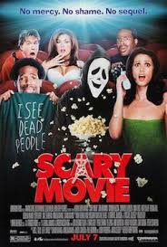

Scary movie

Scary Movie (2000) es una comedia de terror y parodia dirigida por Keenen Ivory Wayans. La película se burla de los clichés de los filmes de terror populares, especialmente Scream y I Know What You Did Last Summer. Sigue a un grupo de adolescentes que accidentalmente matan a alguien y, un año después, son perseguidos por un misterioso asesino enmascarado. Con humor absurdo, referencias a la cultura pop y situaciones exageradas, Scary Movie se convirtió en un éxito que dio inicio a una popular saga de parodias.
Lista de 3 personajes:
Cindy Campbell
Brenda
Shorty Meeks
Volver